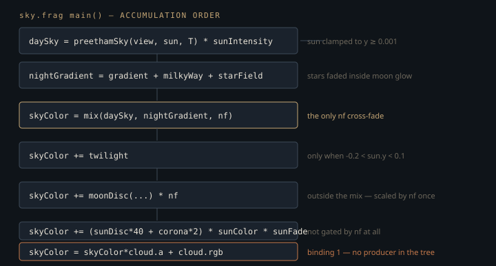

Monograph · Tree · ← Module hub · Sky pass
deferred
Sky pass
HDR sky / atmosphere composite into lighting output.
Pixels no light touched
Of the GBuffer's four colour clears only two are all-zero — position/metallic and velocity. The octahedral-normal target clears to mid-grey and the albedo target clears its AO channel to 1.0, so "the GBuffer starts black" is not true of the attachments as a whole.
clearValues[1].color = {{0.5f, 0.5f, 0.5f, 0.0f}}; // OctNormal (rg) + Roughness (b) + Emissive (a)ohao/render/deferred/gbuffer_pass.cpp:157clearValues[2].color = {{0.0f, 0.0f, 0.0f, 1.0f}}; // Albedo (rgb) + AO (a)ohao/render/deferred/gbuffer_pass.cpp:158What makes an uncovered pixel black is one early-out in deferred lighting, gated on the position target alone: zero RGB *and* zero alpha, write black, return. It fires above the lines that unpack albedo, normal and roughness, so the values those targets were cleared to are never read.
if (gBuffer0Sample.rgb == vec3(0.0) && gBuffer0Sample.a == 0.0) {shaders/core/deferred_lighting.frag:155`SkyPass` fills those pixels afterwards, binding the lighting pass's own `R16G16B16A16_SFLOAT` image as a colour attachment with `LOAD_OP_LOAD` so the shaded geometry survives untouched.
colorAtt.loadOp = VK_ATTACHMENT_LOAD_OP_LOAD;ohao/render/deferred/sky_pass.cpp:185That render pass has no depth attachment, so it cannot express "only where depth == far" as a depth test — and *far* here is literally the GBuffer's depth clear.
clearValues[4].depthStencil = {1.0f, 0}; // Depthohao/render/deferred/gbuffer_pass.cpp:160Instead the GBuffer depth image arrives as a `NEAREST`-filtered texture at set 0 binding 0 and the fragment shader kills every covered pixel itself, discarding below a 0.9999 threshold.
if (depth < 0.9999) {shaders/postprocess/sky.frag:356Geometry is one oversized triangle generated from `gl_VertexIndex`, no vertex buffer bound — the whole pass is three vertices and a 128-byte push-constant block.
vkCmdDraw(cmd, 3, 1, 0, 0); // fullscreen triangleohao/render/deferred/sky_pass.cpp:112The obvious alternative is a sky *dome* rasterised into the GBuffer with a depth test. That spends GBuffer bandwidth on pixels carrying no material, forces the lighting pass to special-case an "unlit" material, and puts the sky at a finite distance where the velocity target and TAA reproject it wrongly. A fullscreen pass after lighting removes all three. The price: the sky cannot feed anything that consumes the GBuffer — SSAO, the SSS blur and screen-space reflections have all already run by the time it exists.
Six Perez evaluations, or none
The daylight model is Preetham 1999, evaluated analytically per fragment — no lookup table, no precomputed transmittance. Its core is the Perez distribution:
return (1.0 + A * exp(B * safeInvCos)) * (1.0 + C * exp(D * gamma) + E * cosGamma * cosGamma);shaders/postprocess/sky.frag:101$\theta$ is the view ray's angle from the zenith, $\gamma$ its angle from the sun. The first factor is the horizon-to-zenith gradient; the second is circumsolar brightening plus a Rayleigh-ish $\cos^2$ term. The code never forms $\theta$ — it passes $\cos\theta$ directly as `viewDir.y`, hard-wiring world $+Y$ as the zenith.
Three quantities are distributed this way — luminance $Y$ and the CIE chromaticities $x,y$ — each with five coefficients, every one affine in turbidity $T$:
float Ay = 0.1787*T - 1.4630, By = -0.3554*T + 0.4275;shaders/postprocess/sky.frag:115Perez is only a *relative* distribution, so each channel is normalised by its straight-up value and rescaled by an absolute zenith quantity:
where $\theta_s$ is the solar zenith angle and $Y_z, x_z, y_z$ are Preetham's closed forms in $T$ and $\theta_s$. Hence six `perez()` calls: three normalisers at $(\cos\theta = 1, \gamma = \theta_s)$, three at the view direction. The $xyY$ triple then expands to CIE XYZ, hits the standard linear-sRGB matrix, and is scaled by one hard-coded constant:
return max(rgb, vec3(0.0)) * 0.05;shaders/postprocess/sky.frag:151Not every sky pixel pays for that, though. `preethamSky()` has one call site, inside `if (viewDir.y > -0.05)`; the else branch assigns the flat `pc.groundColor` and evaluates no Perez terms at all. Since the pass shades every pixel the GBuffer left uncovered, below the horizon included, ground-facing sky pixels cost zero Perez evaluations.
daySky = pc.groundColor;shaders/postprocess/sky.frag:386Preetham's $Y_z$ is in kcd/m², and the `0.05` is an unexplained first step onto the engine's HDR units — nothing in the source justifies the number. It is not the last step: the call site multiplies the result again by `pc.sunIntensity`, which is a real exposure knob fed from `DeferredRenderer::m_skyIntensity`.
daySky = preethamSky(sd, sunDir, T) * pc.sunIntensity;shaders/postprocess/sky.frag:378`m_skyIntensity` defaults to `1.0f` and `setSkyIntensity` has no callers in the tree, so in practice the `0.05` is what sets sky brightness — but the knob to change it already exists, and it is not the constant.
The turbidity clamp is wider than the fit
$B_Y = -0.3554\,T + 0.4275$ is the exponent of the horizon term. It is negative — and therefore *decaying* toward the horizon, which is the point — only above
Below that the sign flips and $e^{B_Y/\cos\theta}$ *grows* as the view ray drops. Both the C++ setter and the shader clamp turbidity to $[1, 10]$, so $T \in [1, 1.20)$ is reachable through the public API. Nothing becomes infinite — `main()` floors the view direction at `y = 0.001` and `perez()` floors $\cos\theta$ again at `1e-4`, bounding $1/\cos\theta$ near 1000 — but at $T = 1$ that still puts $e^{72} \approx 2\times10^{31}$ on the horizon term. Preetham fitted these linear coefficients well above $T = 1$; the clamp is simply wider than the fit's domain. The default of 2.5 sits comfortably inside it. Analysis of the shipped coefficients, not a rendered result.
Where the daylight model stops, and what takes over
Preetham is undefined once the sun drops below the horizon: $\theta_s > \pi/2$ drives the $\tan\chi$ term in $Y_z$ negative. The shader refuses to go there, clamping the sun just above the horizon before anything else happens.
sunDir.y = max(sunDir.y, 0.001);shaders/postprocess/sky.frag:109So the daylight model *never* produces darkness. Night is a separate procedural sky — vertical gradient, a Milky Way band from 5-octave 3D value noise on the view direction, a 300×150-cell star field with stellar-class colours — cross-faded against the Preetham result by one night factor from sun height:
m_nightFactor = 1.0f - glm::smoothstep(-0.3f, 0.1f, sunHeight);ohao/render/deferred/deferred_renderer.cpp:813It is computed eagerly inside `setSunDirection`, not at draw time: the light buffer upload runs before `render()` and would otherwise read a stale value, leaving sky and object lighting one frame apart on the time of day after every sun move.
Hosek-Wilkie would extend the analytic daylight model closer to the horizon; a Bruneton-style precomputed atmosphere would cover twilight and night from one physical model. This pass took neither: closed-form Preetham handed to a hand-authored night sky through a `smoothstep`. The cost is that twilight is not physical at all — a warm additive lobe gated on `sunHeight ∈ (-0.2, 0.1)`, pointed along the sun's azimuth.
What is added, in what order

Everything folded into `nightGradient` — gradient, Milky Way, stars — is scaled by `nf` once when the blend runs. The moon is deliberately kept out of that sum and added afterwards with its own factor.
skyColor += moonDisc(viewDir, moonDir, sunDir) * nf;shaders/postprocess/sky.frag:441The source comment attributes this to avoiding an `nf²` double-scale — which is only true of a moon term already premultiplied by `nf`, presumably the shape the code had before the fix, since `mix` applies exactly one factor to anything inside `nightGradient`. The sun disc, by contrast, is gated by its own `sunFade` and never touched by `nf`.
A moon that is always nearly full
`moonDisc()` is real spherical shading: a tangent frame on the disc, a normal reconstructed from the normalised offset, `N·L` against the sun for the terminator, earthshine, limb darkening. Its radius in radians comes from the same cosine threshold as the mask, via $\sin\theta = \sqrt{1-\cos^2\theta}$:
float discRadius = sqrt(1.0 - 0.9994 * 0.9994); // ~0.0346 radshaders/postprocess/sky.frag:317At that threshold $\sin\theta = 0.0346$, a half-angle of 0.0346 rad: the disc is just under 4° across, eight times the real Moon's 0.5°, sized for visibility. The sun disc uses identical thresholds.
None of the phase machinery is exercised, because the moon is not an independent body. The same `setSunDirection` that computes the night factor derives it, on the next line:
glm::vec3 rawMoon = -m_skySunDirection + glm::vec3(0.0f, 0.15f, 0.2f);ohao/render/deferred/deferred_renderer.cpp:814Write $\hat{s}$ for the unit sun direction and $n = (0,\,0.15,\,0.2)$ for the fixed nudge, so $\hat{m} = (n - \hat{s})/\lVert n - \hat{s}\rVert$. Since $\lVert n \rVert^2 = 0.0625$,
which is exactly $-1$ at both ends of that range and least negative at $a = 1/16$, where it equals $-\sqrt{0.9375} \approx -0.968$. Concretely: $-0.973$ with the sun at zenith, $-0.985$ at the nadir. So the shader's illuminated fraction $\tfrac{1}{2} - \tfrac{1}{2}(\hat{s}\cdot\hat{m})$ never drops below 0.984 — always within a per cent of full.
The rig does buy correct visibility for free: antisolar puts the moon below the horizon whenever the sun is high, and the disc early-outs there. Crescents, though, would have to come from `DeferredRenderer`, not from `SkyPass`. `render()` pushes `m_moonDirection` into the pass on every frame, so an external `SkyPass::setMoonDirection` is overwritten before the next draw:
m_skyPass->setMoonDirection(m_moonDirection);ohao/render/deferred/deferred_renderer.cpp:561and the derivation above is the only code that assigns `m_moonDirection`, which is private and exposed by a getter with no matching setter. A phased moon needs an override there, not a call into the pass.
The input with no producer
Binding 1 is a `sampler2D` the shader composites over the finished sky, reading RGB as in-scattered radiance and alpha as transmittance:
vec4 cloudSample = texture(cloudBuffer, inTexCoord);shaders/postprocess/sky.frag:455The half-res `RGBA16F`, `GENERAL`-layout image those channels are supposed to come from exists only in comments — on the shader binding, on the setter, and on the descriptor-layout code. Nothing in the tree allocates it, so treat the format and resolution as documented intent, not as a description of a resource.
// Input: half-res cloud buffer (RGBA16F, VK_IMAGE_LAYOUT_GENERAL)ohao/render/deferred/sky_pass.hpp:38`SkyPass::setCloudBuffer` has no callers anywhere in the tree, and there is no cloud pass to call it: the volumetric cloud system was moved out and `cloud.comp` now lives under `shaders/_disabled/`. `updateDescriptors()` writes binding 1 only when `m_cloudView` is non-null, so the descriptor is declared in the layout, allocated from the pool, and never written — while the shader samples it unconditionally, before the `a < 0.999` guard can skip anything. Reading an unwritten combined-image-sampler descriptor is undefined per the Vulkan spec; if a driver returns zeros, the guard is taken and the sky is multiplied by `cloud.a == 0`. Nothing here claims what a given driver does — only that nothing makes the read defined.
Which image the sky actually lands in
`setHDROutput` binds the pass to the *lighting* pass's image — at init, and again from `onResize` once that image has been reallocated. Post-processing, however, prefers the SSS pass's output whenever that pass initialised — and `SSSPass::initialize` allocates its output image unconditionally, so `getOutputView()` is non-null wherever SSS came up at all.
VkImageView hdrView = (m_sssPass && m_sssPass->getOutputView()) ?ohao/render/deferred/deferred_renderer.cpp:620The SSS blur runs earlier in the same command buffer, reading the lighting image before the sky wrote it. On that path the sky lands in an image the tonemapper never reads; the particle pass, sharing the target, inherits the same problem.
The sky pass writes into the lighting pass's HDR image, not into "the frame". Anything that inserts a full-screen copy between lighting and post-processing silently drops the sky, and the SSS pass already is such a copy.
Contracts
- The GBuffer must leave depth in `DEPTH_STENCIL_READ_ONLY_OPTIMAL`; the sky's descriptor write hard-codes that layout and reads depth with no barrier of its own.
- The lighting pass must leave the HDR image in `SHADER_READ_ONLY_OPTIMAL`, which the sky declares as both `initialLayout` and `finalLayout`, bouncing through `COLOR_ATTACHMENT_OPTIMAL` via two external subpass dependencies.
- `SkyPass::onResize` destroys the framebuffer and never recreates it — only `setHDROutput` does, which is why `DeferredRenderer::onResize` calls both, in that order. Drop the second call and the pass silently no-ops on a null framebuffer.
- One descriptor set serves all frames in flight, so descriptors are rewritten only when a view changes, guarded by a dirty flag. Reverting to a per-frame update reintroduces a write-while-in-flight race.
// with in-flight frames at high refresh rates (144Hz+).ohao/render/deferred/sky_pass.cpp:67Source files
ohao/render/deferred/gbuffer_pass.cppshaders/core/deferred_lighting.fragohao/render/deferred/sky_pass.cppshaders/postprocess/sky.fragohao/render/deferred/deferred_renderer.cppohao/render/deferred/sky_pass.hppParent hub for the full pipeline narrative; this page is the file-level design unit. Sitemap · hover glossary terms anywhere.